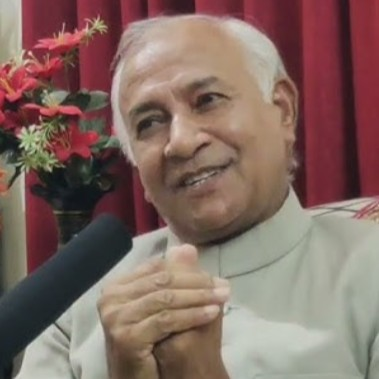

Prof. Dr. Qibla Ayaz
Supreme Court Shariat Appellate Bench
View Full Profile →Home/Institute Leadership/Board of Governors
Institute Leadership
The Board provides guidance on AQIRI’s research priorities, academic standards, and institutional development.
Supreme Court Shariat Appellate Bench
View Full Profile →
International Islamic University, Islamabad
View Full Profile →
Aligarh Muslim University, India
View Full Profile →University of Malaya, Malaysia
View Full Profile →Ghazi University, Dera Ghazi Khan
View Full Profile →
University of the Punjab, Lahore
View Full Profile →